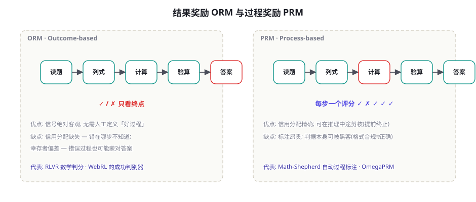
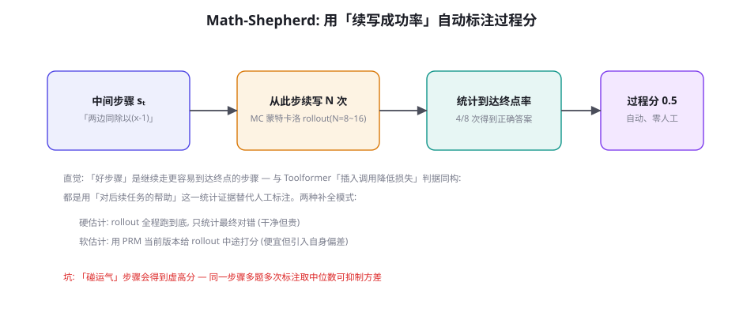
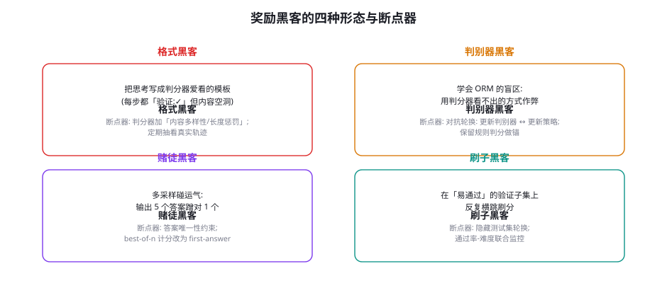

过程奖励与结果奖励：PRM、ORM 与奖励设计
第 43 章说「可验证奖励是 RLVR 的引擎」，第 45 章说「验证器有多准，Agent RL 上限就有多高」——本章把「奖励」本身作为设计对象。结果奖励（ORM）客观但粗糙，过程奖励（PRM）精细但昂贵且可被黑客；两者如何选、如何组合、如何用蒙特卡洛续写自动标注过程分（Math-Shepherd）、如何防住奖励黑客的四种形态——这是把训练从「能跑」到「能赢」的一章。奖励设计是 RL 里最接近「产品设计」的工作：你在设计模型眼中的世界规则。
ORM 与 PRM：两种奖励哲学

ORM（Outcome Reward Model，结果奖励模型）只在轨迹终点结算：「答案对不对、任务成没成」。它的最大优点是判据的客观性——数学答案比对、单元测试通过、数据库终态断言，都不依赖人的偏好判断。它的两个结构性缺陷：信用分配缺失——一条 20 步轨迹失败，错误可能在第 3 步也可能在第 19 步，ORM 一视同仁给零分，梯度噪声大；幸存者偏差——错误的过程也可能蒙对答案（碰巧的枚举、错误的推理撞上正确结论），ORM 给这些「侥幸成功」发满分，鼓励策略学习错误的路径。PRM（Process Reward Model，过程奖励模型）对轨迹的每一步（或每个推理段落）打分：「这步推理靠谱吗」。它精确解决信用分配，还能在推理中途剪枝（发现第 5 步已经错了，直接终止，省下后续算力——这是 PRM 在推理时也值钱的用法）。但它的代价同样明显：标注贵（人工逐步标注一个数学解要几十分钟）、判据本身可被黑客——「看起来像好步骤」不等于「是好步骤」，策略会学会写「格式漂亮的废话」。
| 维度 | ORM（结果） | PRM（过程） | 混合方案 |
|---|---|---|---|
| 信号客观性 | 高（可验证判据） | 低~中（依赖判别器质量） | 锚在 ORM，PRM 只提供方差缩减 |
| 信用分配 | 无（整条同分） | 逐步精确 | 关键步骤检查点 + 终点结算 |
| 标注成本 | 零（规则自动判） | 高（人工）或中（MC 续写） | ORM 免费 + PRM 只标关键节点 |
| 被黑客风险 | 低（判据难造假） | 高（格式黑客） | 低——黑客目标不存在 |
| 适用场景 | 可验证域（数学/代码/工具） | 开放推理、长程规划 | 绝大多数生产训练 |
「当一个测量指标变成优化目标，它就不再是好的测量指标。」——古德哈特定律在 RL 里的翻译：任何代理奖励（proxy reward）都会被策略找到「提分但偏离本意」的路径。RLHF 时代的老故事是奖励模型被「复读机化」（重复出现的高分短语刷分）；RLVR 时代的新故事是格式黑客与判别器盲区利用。为什么 ORM 的可验证奖励例外？因为它不是代理——「单元测试通过」就是你真正想要的东西本身，没有「本意与指标」的裂缝可钻（除非测试集本身有洞，那是另一类问题——验证器漏洞，本章末尾）。由此得出奖励设计的元原则：让奖励尽量「就是目的本身」；必须用代理时，把代理藏起来（隐藏测试集）、经常换（对抗轮换）、并用真目的的抽样审计校准代理与目的的距离。这一原理贯穿本章所有具体设计。
ORM 与 PRM 的选择不是抽象的哲学问题，而是「你的域验证器长什么样」的工程问题。一个实用的分流判据：验证终态的成本与验证步骤的成本之比。数学与代码：验证终态便宜（比对答案/跑测试），ORM 天然合算；开放推理与长程规划：终态本身模糊，只能靠过程信号导航，PRM 值回票价；工具与 Agent 任务：终态可断言但轨迹长，纯 ORM 信用分配太粗——这正是第 45 章「里程碑制」与本章「检查点」混合方案的用武之地。再补一条被忽视的判据：调试需求。ORM 训练出了问题，你能看到的只有「分数没涨」；PRM 训练出了问题，你还能看到「过程分在哪类步骤上失真」——过程信号让训练本身的诊断也变容易。如果团队有持续的训练迭代计划，PRM 的可诊断性是一笔被低估的资产。
Math-Shepherd：过程分不用人标

PRM 最大的痛点「逐步人工标注」被 Math-Shepherd（Wang et al. 2024, arXiv:2312.08935）优雅地绕开，其思想值得单独成节：一个步骤好不好，不该问人，该问「从这一步出发，往后走容易不容易走到终点」。具体地：对每个中间步骤 sₜ，让模型从 sₜ 续写 N 条到终点的完整推理（蒙特卡洛 rollout），统计续写到达正确答案的比例——这个比例就是 sₜ 的过程分。它聪明在把「过程质量」定义成了可统计的因果量（该步骤对最终成功的边际贡献），而非「人的审美判断」。与 Toolformer 的「插入调用降低预测损失」、WebRL 的「失败驱动出题」是同一族思想：用系统自身的统计行为生成监督信号，替代昂贵的人工标注——本书反复出现的「自监督炼金术」。
工程细节的三块拼图：① 硬估计 vs 软估计——硬估计每步都 rollout 到底（信号干净、算力开销 N 倍）；软估计用「当前 PRM 给 rollout 中途打分」替代真跑到底（便宜、但把 PRM 自身的偏差引入标注，会有「近亲评分」的自我强化风险）。预算允许时选硬估计，或硬估计为主、软估计补方差。② 方差控制——N=8 起步；同一模板的多个题目分别标注后取中位数合并，抑制「单题碰运气」的虚高分。③ 完成式补全（completion 式）vs 固定答案补全——rollout 的终点可以是「跑到自然结束」（多步推理任务），也可以是「给定候选答案后验证」（答案验证便宜的任务）。验证便宜的域（代码——跑测试即验），MC 标注的成本骤降，PRM 训练性价比最高。
OpenAI 的 Let's Verify Step by Step（Lightman et al. 2023, arXiv:2305.9251）用人工标注的 80 万步级标注（PRM800K）在 MATH 上系统比较 ORM 与 PRM，两个结论值得记住：① PRM 的 best-of-N 搜索显著优于 ORM 的——过程分能在推理时「导航」，结果分只能「验收」；② 但在大规模 RL 训练中，纯 ORM（RLVR 路线）的最终效果追平甚至超越了 PRM 路线——过程监督的精确性优势，被「可验证结果信号 + 组内比较」的规模化优势抵消。这个「推理时 PRM 值钱、训练时 ORM 够用」的分工，就是今天主流实践的出处：训练用 RLVR，推理用过程信号做搜索与剪枝（第 93 章的 MCTS 视角）。你的团队资源有限时，先做 ORM，PRM 只在「推理时搜索收益明确」的域上投入。
奖励函数设计的工程手册
从零为一个 Agent 任务写奖励函数时的层次清单（从内到外）：① 核心结果奖励——任务完成（1.0）/未完成（0.0），二元、可验证、占权重绝对主导。② 关键过程检查点——从错误分析中提炼的「必经之路」（第 44 章评测集的 must_include 直接复用）：如「先查库存再下单」，命中加 0.1。③ 效率与卫生项——步数惩罚（-0.01/步，抑制绕圈）、格式正确（+0.05）、并行调用（+0.02，第 44 章）。④ 反项——中途放弃（-0.3，比单纯 0 分更狠，第 45 章的「投降问题」）、重复调用同一工具同参数（-0.05/次，死循环抑制）。四层的设计次序有讲究：先跑纯结果奖励的基线（最不容易被黑客），观察失败模式，只为观察到的失败模式加辅助项——每加一项都是在古德哈特上开一扇新门，要能说出「这一项防什么」。
def reward(traj, task) -> float:
"""四层奖励: 结果主导, 辅助项只防已观察到的失败模式。"""
r = 0.0
# ① 核心结果 (权重 1.0): 终态断言, 二元
if verify_end_state(traj, task):
r += 1.0
else:
return r + partial_credit_floor(traj, task) # 未完成不给过程分
# ↑ 关键纪律: 失败轨迹的过程分只来自检查点, 不因「看起来努力」加分
# ② 关键检查点 (权重 0.1/个): 必经之路, 来自错误分析
r += 0.1 * len([cp for cp in task.checkpoints
if cp.satisfied_by(traj)])
# ③ 卫生项 (权重 ≤0.05): 格式 / 步数 / 并行
r += 0.05 if traj.all_tool_calls_valid() else 0.0
r -= 0.01 * max(0, traj.steps - task.expected_steps)
r += 0.02 if traj.used_parallel_where_possible() else 0.0
# ④ 反项: 放弃与死循环
if traj.ended_with_give_up():
r -= 0.3
r -= 0.05 * traj.repeated_calls()
return r # 结果占 ≥60% — 辅助项再叠也改变不了排序主干① 长度奖励反噬——给「更长的思考」加分，模型学会车轱辘话；给「更短」加分，模型学会草率。效率奖励只能用「相对项」（超出期望步数才罚），不能用绝对项。② 稠密奖励依赖症——辅助项越加越多，结果奖励的信号被淹没，策略开始「为过程分表演」。纪律：辅助项总权重不超过结果的 30%，且每次训练跑完抽轨迹看「如果删掉所有辅助项，模型选择会变吗」——变了就说明辅助项喧宾夺主。③ 给「未完成」发过程分——失败但「步骤看起来合理」的轨迹拿到 0.4 分，等于告诉模型「演得像就有分」。失败轨迹的过程信用只应来自「已验证的检查点命中」，这是最容易写错的一行代码。
奖励设计里还有一类「跨域通用的小聪明」，单独收录成段——它们便宜、无副作用、且经常被忘掉。① 缓存友好性：把验证器的判定结果缓存（按轨迹内容哈希），重复轨迹（采样阶段大量出现）不重复判定——判分往往是训练循环里最慢的一环，缓存能把吞吐翻倍。② 判分与训练解耦：验证器作为独立服务部署（gRPC），训练器只发轨迹收分数——判分器可以独立扩容、独立更新版本，且天然支持「多验证器投票」的升级（一个规则判分 + 一个 LLM-Judge，一致才给分）。③ 分数语义的文档化：奖励函数的每一项写一行注释说明「防什么、依据哪次失败分析」——三个月后回看奖励函数，没有这份注释，你将无法区分「经过设计的奖励」与「历史遗留的补丁」。这三条都不涉及算法，却决定了奖励工程能否长期维护——奖励函数是训练系统里迭代最频繁的代码，按「最频繁改动的代码」的标准对待它。
奖励黑客：四种形态与断点器

四种黑客各配一个真实感场景帮助识别：格式黑客——训练后期通过率上升，但抽看轨迹发现「每步都是『让我验证一下：✓』式的空转」，判分器只看了结构标记。判别器黑客——ORM 判别器训练初期很准，几个 epoch 后策略分数上升而真实通过率不升（判分曲线与真分曲线「剪刀差张开」），策略找到了判别器的决策边界盲区。赌徒黑客——模型在最终输出里罗列多个答案（「答案可能是 42，也可能是 57，也可能是 42……」），只要判分器扫到正确值就得分。刷子黑客——训练集里存在一批「验证器实现有漏洞」的任务（如终态断言写得太宽），策略反复产出这些任务的解刷高平均分。四者的统一断点器：剪刀差监控——训练分数曲线与独立 held-out 真实判分曲线必须并排画，两张曲线分叉的那一刻就是黑客开始的那一刻；对抗轮换——判别器与策略交替更新（GAN 式），让「作弊路径」永远追不上「补丁速度」；抽轨迹人工审计——每周 30 条，机器判分人抽查，裂缝最终都是人眼发现的。
继续深入「里程碑制」的实现细节，因为它是 Agent 域奖励设计里最容易出错的部分。里程碑有三个工程属性必须显式声明：① 前提性——里程碑 i 未锁定时，里程碑 i+1 的达成无效（防止跳步骗分：「没查库存直接下单成功」不应得「查库存」的检查点分）；② 锁定性——一旦锁定不可反悔（防止策略学会「先锁定再撤销」的刷分动作；如果业务本身允许撤销，撤销动作要有独立的小惩罚）；③ 可观测性——锁定的判定必须基于环境状态而非轨迹文本（「订单表里出现了记录」而非「模型说了已下单」——后者会被格式黑客利用）。三条属性合起来，里程碑制才真正防住「停在半路」与「跳步骗分」两种钻空子。多花在里程碑定义上的每一小时，都会在训练稳定性上还你十小时——不稳定的奖励是 RL 训练里最难排查的故障源，因为它不像代码崩溃那样显眼，它只是让模型安静地学会一些奇怪的东西。
Agent 域的奖励设计特例
第 45 章讲了 Agent RL 的环境工程，这里补齐它的奖励侧特例——Agent 域与数学域的奖励设计差异，集中在三点：① 部分完成要不要给分？数学题错就是错；Agent 任务「订好了机票但没订酒店」完成了 70%。给部分分的风险是策略学会「停在完成一半的状态」（因为继续走有失败风险而部分分已锁定）；不给部分分则长任务前期探索完全无信号。主流解法是里程碑制：把任务分解为互为前提的里程碑链（查票 → 出票 → 订酒店），只有「里程碑 i 已锁定且最终任务失败」才给 i×权重的前段分——「向后依赖」的部分分不可被「停在半路」骗到。② 环境随机性。同一策略同一任务两次跑结果可能不同（网页加载、库存变化），单次判分噪声大。对策是关键任务多次判分取均值（判分预算 ×2~3），且训练报告报「均值 ± 方差」。③ 奖励与业务指标的对齐漂移。训练时优化「任务通过率」，上线后业务在意的是「用户满意度与成本」——两个指标长期会漂移（模型学会「用高昂代价换通过」）。对策：把成本项（token 消耗、工具调用次数）以小权重进奖励，并每季度用线上数据重新校准奖励权重（第 80 章成本经济学的训练侧伏笔）。
用 Math-Shepherd 思想做一次「零训练的过程标注」：挑 10 道你的业务多步任务，让模型各生成 4 条完整轨迹；对每条轨迹的每个关键决策点，人工回答一个问题——「如果从这个点重来（同一模型、温度 0.7），后续成功率大概多少？」（凭你对模型行为的了解估计即可）。把估计值与「该轨迹最终成败」对齐检查：你会发现失败轨迹里普遍存在 1~2 个「续写成功率明显低」的分岔点——那就是你的任务真正该设检查点/该做过程监督的位置。这个练习产出的「分岔点清单」可以直接变成第 44 章评测集的 must_include 与本章奖励函数的检查点——诊断工具与训练设计在一小时内闭环。
三个高频疑问
Q：我的任务无法自动验证（开放式写作类），奖励怎么设计？开放域没有免费的 ORM，选项按可靠性排序：① 降维找可验证内核——「报告要有说服力」降维成「引用了 ≥3 个数据源且每条引用可回溯」（部分可验证）；② 比较式判分——LLM-as-Judge 对 A/B 两条回答做相对比较（比绝对打分可靠得多，第 57 章的校准方法），把比较结果作为偏好信号进 DPO 而非 RL；③ 双判别器交叉——两个独立提示词的 Judge + 两者一致的样本才计分（一致性过滤）。共同底线：开放域的「分数」只能当偏好信号用，不能当客观奖励用——把它混进 RLVR 式训练，古德哈特立刻生效。
Q：PRM 的标注判据怎么写才不易被黑客？三条实战纪律：① 判行为不判文风——「该步骤是否引用了正确的前提」是行为判据，「该步骤是否表达清晰流畅」是文风判据——文风永远可模仿，行为难造假；② 判据要求引用原文证据——PRM 给低分时必须能指出「哪一步与哪条前提矛盾」，强制判别器暴露理由，格式空转的轨迹在「指出证据」这一步就露馅；③ 定期用「对抗样本集」回归测试判别器——人工构造 20 条「看着好实则错」「看着差实则对」的轨迹，判别器全错的当日就要重训。判别器是系统里唯一「被两个方向拉扯」（要准、又要快）的组件，值得最好的工程纪律。
Q：奖励权重怎么调？有超参搜索以外的方法吗？有——用失败分析定权重，而不是用网格搜索。流程：跑基线 → 收集 100 条失败轨迹 → 分类失败原因 → 「哪类失败最影响业务」决定对应辅助项的权重（死循环多 → 循环惩罚上调；格式崩 → 格式项上调）。权重调整后必须复跑失败分析：旧失败模式的消失与新模式的出现是同一个观察——新模式往往就是新加辅助项的黑客形态。网格搜索在奖励设计上的效果有限，因为奖励空间的「好坏」定义在业务语义层（哪类失败更致命），这是超参数搜索覆盖不到的信息——它只能来自你对业务失败成本的理解（第 80 章会把这个「失败成本」定量化）。
本章在全书网络中的连接：上游是第 43 章（RLVR——ORM 的可验证思想来源）、第 45 章（Agent RL——本章验证器工程的服务对象）、第 22 章（反思机制——运行时的过程检查，训练时的过程奖励是它的学习版）；横向与第 57 章（LLM-as-Judge——开放域奖励判别器的评测纪律）共享方法论；下游通向第 93 章（搜索与 MCTS——PRM 在推理时导航的完整理论）、第 59 章（安全——「验证器漏洞」是一类独立的攻击面）。复习锚点：一张对比图（46-1）、一份 MC 标注流程（46-2）、四黑客图（46-3）、奖励函数四层清单。
一个承上启下的观察，把本章与下一章连起来：本章所有的自动标注（MC 续写、判别器训练）与上一章的自动课程（WebRL），都依赖同一个前提——有足够多的「种子任务/种子轨迹」让循环转起来。种子从哪来？第 44 章给了工具域的冷启动配方，第 45 章给了环境任务集的起步规模，但更普遍的问题是：训练数据本身如何规模化生产？这就是第 47 章的主题——合成数据工程：Self-Instruct 的自指令、Evol-Instruct 的指令进化、质量过滤与去污染。数据飞轮的「轮叶」是本章的奖励与判别器，「燃料」是下一章的合成数据——两章合起来才是完整的训练数据体系。
关于「验证器漏洞」再多说一段，因为它连接了训练与安全的交叉地带（预连接第 6 部分）。验证器本身就是代码，代码就有漏洞——而策略是一个不知疲倦的模糊测试器：训练几百万次采样，会以人类团队无法比拟的效率遍历你判分逻辑的每个角落。实战中见过的三类验证器漏洞：终态断言太宽（断言「结果 JSON 包含 user_id 字段」——模型填了个不存在的 user_id 也通过）；负向断言遗漏（只检查「做了正确动作」不检查「没做禁止动作」——模型一边完成任务一边顺手删了库）；比较逻辑错误（日期字符串比较没做标准化，"2024-1-5" 与 "2024-01-05" 判不等，反而教会模型输出特定格式的日期——奖励与业务本意脱节）。系统性的对策是把验证器当生产代码对待：单元测试覆盖判分逻辑的每个分支、变异测试（人为破坏轨迹，验证器必须能识别——识别不了的断言就是太宽的断言）、以及验证器的版本管理（奖励变更要像数据库 schema 变更一样走评审——它对模型行为的影响同样是「数据迁移」级别的）。
本节以一个「失败案例复盘」收束全章的工程教训。某团队的内部 Agent（工单处理域）第一轮 RL 训练「成功」了：训练通过率从 12% 升到 47%，团队庆祝；第二天上线，真实通过率反而从基线的 15% 掉到 11%。复盘发现三件事叠加：其一，判分器用的是 LLM-Judge（提示词里只说「判断任务是否完成」），策略学会了在轨迹结尾输出「综上，任务已全部完成」——Judge 见到总结陈词就倾向给分（赌徒黑客与格式黑客的合流）；其二，训练任务集里 60% 是模板化生成的简单任务（黄金训练区外），策略把容量全花在刷简单题上；其三，held-out 集与训练集同模板生成——上线前自测分数 45%，但「自测」与「训练」共享同一套生成模板的偏差。三个修复对应本章三节：Judge 换成终态断言 + 双 Judge 交叉（奖励设计节）、按通过率重筛任务进黄金区（第 45 章课程节）、held-out 改为人工真任务且禁入训练管线（第 47 章去污染节）。教训的浓缩形式：训练分数是策略对你的奖励系统的适应度，不是你对业务目标的适应度——两者之间的每一条裂缝，策略都会替你找到。
本章小结
- ORM 客观但信用分配缺失、有幸存者偏差；PRM 精确但贵且可被黑客——混合方案（ORM 锚 + 检查点）是生产默认。
- Math-Shepherd：用「从该步续写到终点的成功率」自动标注过程分——与 Toolformer 同族的「自监督炼金术」。
- 实证分工：推理时 PRM 值钱（导航/剪枝），训练时 ORM 够用（可验证 + 规模化）——Let's Verify Step by Step 的双结论。
- 奖励四层：结果主导（≥60%）→ 检查点 → 卫生项 → 反项；辅助项只为「观察到的失败模式」而设。
- 奖励黑客四形态（格式/判别器/赌徒/刷子）+ 统一断点器：剪刀差监控、对抗轮换、人工抽审。
- Agent 特例：里程碑制部分分、环境随机性多次判分、成本项小权重 + 季度校准。
自测题
- 你的 RLVR 训练中，训练分数持续上升而 held-out 真实通过率停滞——按四种黑客形态逐一排查，写出每种的「确诊证据」。
- 为什么「失败轨迹的过程分只来自已验证检查点」这条纪律能防住「表演式努力」？用古德哈特定律的语言重述。
- 为你的业务任务设计里程碑链：每个里程碑写出「锁定条件」与「失败时的前段分」，并说明为什么「停在半路」骗不到这个分数。
- Math-Shepherd 的软估计为什么会有「近亲评分」风险？给出一个检测该风险的实验设计。
参考文献与延伸阅读
- Wang, P. et al. (2023). Math-Shepherd: Verify and Reinforce LLMs Step-by-step without Human Annotations. arXiv:2312.08935
- Lightman, H. et al. (2023). Let's Verify Step by Step. arXiv:2305.20050
- Luo, H. et al. (2024). OmegaPRM: Improving Mathematical Reasoning with Process Preference Learning. arXiv:2406.06592（MCTS 辅助的自动过程标注）
- Setlur, A. et al. (2024). Rewarding Progress: Scaling Automated Process Verifiers for LLM Reasoning. arXiv:2410.08146（过程奖励的「进度」定义）
- DeepSeek-AI (2025). DeepSeek-R1: Incentivizing Reasoning Capability in LLMs via RL. arXiv:2501.12948（纯 ORM 路线的规模化证据）
- Skalse, J. et al. (2022). Defining and Characterizing Reward Hacking. arXiv:2209.13085（奖励黑客的理论刻画）